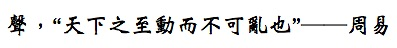

<!DOCTYPE html PUBLIC "-//W3C//DTD HTML 4.01 TRANSITIONAL//EN" "http://www.w3.org/TR/xhtml1/DTD/xhtml1-transitional.dtd">
<html lang="zh">
<html xmlns="http://www.w3.org/1999/xhtml"><head>
<meta http-equiv="content-type" content="text/html; charset=utf-8">
<link rel="stylesheet" href="global.css">

<title>Xunger's Lab@PKU</title>


</head>

<body>
<div id="header">
<!--img src="25APMSLogo2.jpg" class="picture1"-->


<a name="home"></a>
<div id="header">


<div class="block">
<h1>Xun HUANG 黄迅</h1>
<ul>
	<p>Professor</p>
		<p><a href="http://www.mae.ust.hk/">Department of Aeronautics \& Astronautics</a></p>
	<p><a href="http://www.ust.hk/">Peking University</a></p>
	<p>Email: huangxun AT pku.edu.cn </p>
</ul>

<ul>
 <p> </p>
<I>  Acoustics: "The most dynamic and subtlest but yet cannot be disturbed". 
<div style="text-indent:3em;"> From the oldest Chinese classics "I Ching", ~1000 BC.  </div> </I>  
</ul>


</div>
<!--img src="xun2016.JPG" class="picture"-->
</div>

<div id="sidebar">
<div id="navigation">
<ul>
<li><a href="http://www.mae.ust.hk/people/faculty_details.html?uid=3ae94bbc-a556-11e5-a2fd-001cc47a7474">Home</a></li>
<li><a href="http://ihome.ust.hk/~huangxun/index.htm#teaching">Teaching</a></li>
<li><a href="http://ihome.ust.hk/~huangxun/index.htm#papers">Papers</a></li>
<!--li><a href="http://ihome.ust.hk/~huangxun/index.htm#research">Research</a></li-->
<li><a href="http://ihome.ust.hk/~huangxun/index.htm#group">Group</a></li>
<li><a href="http://ihome.ust.hk/~huangxun/index.htm#other">Other</a></li>
</ul>
</div>


<!--h3> Office Hours</h3>
Thursdays 3pm-5pm-->


<!--h3>Contact Information</h3>

<ul>
<li>Xun Huang</li>
<li>MAE Department</li>
<li>The Hong Kong University of Science and Technology</li>
<li>Clear Water Bay, Kowloon</li>
<li>Hong Kong SAR, China</li>
</ul>

<ul>
<li> <a href="mailto:huangxun@ust.hk">Email</a></li>
<!--li>Office: D232 E-quad</li>
<li>Lab: H125 E-quad</li>
<li>Fax: (609) 258-6109</li>
<li>Phone: (609) 258-7321</li>
</ul-->


</div>


<div id="main">
<h3><a name="research"></a>Short Bio</h3>

<ul>
Xun Huang received his BEng degree in Astronautic Engineering from Northwestern Polytechnical University in 1999, 
his MEng degree in Automatic Control from Tsinghua University in 2002, and his PhD degree in Aeronautic Engineering 
from the University of Southampton in 2006. He was a visiting student at Microsoft Research Asia in 2000 (IMU hardware design); 
a research engineer in Control Laboratory of the GE Global Research Center in 2003 (wind turbine control); 
a research fellow and then a lecturer at the University of Southampton from 2007 to 2009. 
He joined Peking University in 2009 as a member of State Key Lab of Turbulence, and acted as the associate head in Department of Aeronautics and Astronautics through 2014 and director of Acoustic Laboratory. 
He was appointed as an associate professor at the Hong Kong University of Science and Technology (HKUST) in 2016 and serves as the director of the two MSc programs (Aeronautical Engineering, and International Air Transport Operations Management), and was appointed as professor at Peking University and adjunct professor at (HKUST) in 2020. 
</ul>
	
<ul>
Prof. Huang's research interests include aeroacoustics, flow-induced noise, wave propagation and scattering, flow control and flight control. 
He has provided professional consultancies to a number of industry projects on acoustic measurements, microphone array, flow control and high-performance 
flight control, and the customers include many famous aerospace engineering companies such as Airbus, AVIC, CARDC, ACAE, CAST, CASIC and CASC.  
He has received Edison award of technology of excellence (GE 2003), best teaching award (PKU 2011), ICBC teaching award (PKU 2012), 
award of excellent young scholar (NSF China 2013), Newton advanced fellowship (Royal Society 2015), and  Elsevier the most cited Chinese researcher 
(in Aerospace Engineering, 2015, 2016). 
</ul>
	
<!--He has been a member of the editorial boards for J. Aeroacoustics and Acta Mechanica Sinica. 
Professor Huang has industrial and research experiences in aeronautics and astronautics and his current interest mainly focuses on aerospace 
related acoustic and control problems. Since 2009 he has managed 5 NSFC research projects as principal investigator, and completed about 10 aerospace industry projects in flight and flow control, acoustic imaging and vibration signal processing, and aircraft and aeroengine noise simulation and theoretical modeling. -->

<!--ul>
	<li> 2015-present, Associate Professor, MAE, HKUST </li>
	<li> 2012-2015, Professor, Aero & Astro, Peking University </li>	
	<li> 2009-2012, Associate Professor, Aero & Astro, Peking University </li>		
	<li> 2008-2009, Lecturer, Aero & Astro, Southampton University </li>
	<li> 2006-2008, Postdoc, Aero & Astro, Southampton University </li>
	<li> 2003-2006, PhD, Aero & Astro, Southampton University </li>
	<li> 2002-2003, Research Engineer, Control Lab, GE Global Research </li>
	<li> 1999-2002, MEng, Automation, Tsinghua University </li>			
	<li> 1995-1999, BEng, Astronautics, Northwestern Polytechnical University </li>																
</ul>

<h3> Research Interest </h3>
Aeroacoustics; Wave; Flow control; Flight control.-->


<h3><a name="teaching"></a>Teaching</h3>

<ol>
   <li> MECH 4820 Flight mechanics  </li>
   <li> MECH 3670 Flight performance, stability and control  </li>   
   <li> Control theory  </li>
   <li> Fundamentals of circuits and electronics  </li>
   <li> Introduction of aeroacoustics  </li>    
   <li> Flight control and simulation  </li>   
   <li> Active control  </li>           
   <li> Summer workshop of aerospace engineering  </li>        
</ol>


<h3><a name="papers"></a>Selected Journal Papers</h3>

<ol>
   <li> W. J. Yu and X. Huang*, <a href="http://iopscience.iop.org/article/10.1088/0957-0233/27/5/055901">"Compressive Sensing based Spinning Mode Detections by In-duct Microphone Arrays"</a>, <I><font color="blue"> Measurement Science and Technology</font></I>, 2016, Vol 27, 055901 (11pp). </li>
   <li> S. Y. Zhong*, X. Zhang and X. Huang, <a href="http://www.sciencedirect.com/science/article/pii/S0021999116001467">"A Controllable Canonical Form of Time Domain Impedance Boundary Condition for Broadband Aeroacoustics Computation"</a>, <I><font color="blue"> Journal of Computational Physics</font></I>, 2016, Vol. 313, pp. 713-725. </li>   
   <li> X. Liu, H. B. Jiang, X. Huang*  and S. Chen, <a href="http://journals.cambridge.org/download.php?file=%2FFLM%2FFLM786%2FS0022112015006333a.pdf&code=b1fc3ee6669f6b60535dff80e4f96db5">"Theoretical Model of Scattering from Flow Ducts with Semi-infinite Axial Liner Splices"</a>, <I><font color="blue"> Journal of Fluid Mechanics</font></I>, 2016, Vol 786, pp. 62-83. </li>
   <li> X. Liu, X. Huang* and X. Zhang,<a href="http://scitation.aip.org/content/asa/journal/jasa/136/5/10.1121/1.4896746">    	
   	"Stability Analysis and Design of Time-domain Acoustic Impedance Boundary Conditions for Lined Duct with Mean Flow"</a>, <I><font color="blue"> Journal of the Acoustical Society of America</font></I>, 2014, Vol 136, No 5, pp. 2441-2452. </li>
   <li> X. Huang*, S.Y. Zhong and X. Liu, <a href="http://journals.cambridge.org/action/displayAbstract?fromPage=online&aid=9265676">"Acoustic Invisibility in Turbulent Fluids by Optimised Cloaking"</a>, <I><font color="blue"> Journal of Fluid Mechanics</font></I>, Vol 749, 2014, pp. 460-477. </li>
   <li> B. Chen, Q. K. Wei*, T. S. Shao, Y. S. Li, and X. Huang, <a href="http://ascelibrary.org/doi/abs/10.1061/(ASCE)AS.1943-5525.0000422">"Aeroacoustic Imaging Experiments of Airframe Noise in Lined Wall Closed-Section Wind Tunnel"</a>, <I><font color="blue"> ASCE's Journal of Aerospace Engineering</font></I>, 2014, July, 04014090. </li>
   <li> X. Huang*, S. Y. Zhong and O. Stalnov, <a href="http://scitation.aip.org/content/asa/journal/jasa/135/5/10.1121/1.4869815">"Analysis of Scattering from an Acoustic Cloak in a Moving Fluid"</a>, <I><font color="blue"> Journal of the Acoustical Society of America</font></I>, Vol 135, No 5, 2014, pp. 2571-2580. </li>
   <li> S. Y. Zhong, Q. K. Wei and X. Huang*, <a href="http://scitation.aip.org/content/asa/journal/jasa/134/5/10.1121/1.4824630">"Compressive Sensing Beamforming based on Covariance for Acoustic Imaging with Noisy Measurements"</a>, <I><font color="blue"> Journal of the Acoustical Society of America</font></I>, Vol 134, No 5, 2013, pp. EL445-EL451.  </li>       
   <li> Q. K. Wei, S. Y. Zhong and X. Huang*, <a href="http://scitation.aip.org/content/asa/journal/jasa/134/1/10.1121/1.4809774">"Experimental Evaluation of Flow-induced Noise in Level Flight of the Pigeon (Columba Livia)"</a>, <I><font color="blue"> Journal of the Acoustical Society of America</font></I>, Vol 134, No 1, 2013, pp. EL57-EL63. </li>
   <li> Q. K. Wei, X. Huang* and E. Peers, <a href="http://scitation.aip.org/content/asa/journal/jasa/133/6/10.1121/1.4803519">"Acoustic Imaging of a Duct Spinning Mode by the Use of an In-duct Circular Microphone Array"</a>, <I><font color="blue"> Journal of the Acoustical Society of America</font></I>, Vol 133, No 6, 2013, pp. 3986-3994. </li>
   <li> Q. K. Wei, Z. G. Niu, B. Chen and X. Huang*, <a href="http://arc.aiaa.org/doi/abs/10.2514/1.C031964">"Bang-Bang Control Applied in Airfoil Roll Control with Plasma Actuators"</a>, <I><font color="blue"> AIAA Journal of Aircraft</font></I>, Vol 50, No 2 2013, pp. 670-677.  </li>
   <li>  X. Huang*, <a href="http://arc.aiaa.org/doi/full/10.2514/1.J052227">"Compressive Sensing and Reconstruction in Measurements with An Aerospace Application"</a>, <I><font color="blue"> AIAA Journal</font></I>, Vol 51, No 4, 2013, pp. 1011-1015.  </li>
   <li>  E. Peers and X. Huang*, <a href="http://link.springer.com/article/10.1007/s10409-013-0004-7">"High-order Schemes for Predicting Computational Aeroacoustic Propagation with Adaptive Mesh Refinement"</a>, <I><font color="blue"> Acta Mechanica Sinica</font></I>, Vol 29, No 2, 2013, pp. 1-11.</li>
   <li> X. Huang*, <a href="http://link.springer.com/article/10.1007%2Fs10894-012-9523-7">"Comments to the Article ''The Use of Plasma Actuators in Narrowband Active Noise Control'' by A. Nasiri Published in J. Fusion Energy (2011) 30, pp. 394-397"</a>, <I><font color="blue"> Journal of Fusion Energy</font></I>, Vol 32, No 1, 2013. </li> 
   <li> X. Huang*, C. Xu and L. Bai, <a href="http://iopscience.iop.org/article/10.1209/0295-5075/98/58002">"Is the Cochlea Coiled to Provide Sound Localization?"</a>, <I><font color="blue"> Europhysics Letters</font></I>, Vol 98, 2012, pp. 58002:1-5. </li>
   <li> X. Huang*, L. Bai, I. Vinogradov and Edward Peers, <a href="http://scitation.aip.org/content/asa/journal/jasa/131/3/10.1121/1.3682041">"Adaptive Beamforming for Array Signal Processing in Aeroacoustic Measurements"</a>, <I><font color="blue"> Journal of the Acoustical Society of America</font></I>, Vol 131, No 3, 2012, pp. 2152-2161. </li>
   <li> X. Huang*, <a href="http://arc.aiaa.org/doi/pdf/10.2514/1.J051508">"Single-Sensor Identification of Spinning Mode Noise from Aircraft Engine"</a>, <I><font color="blue">  AIAA Journal</font></I>, Vol 50, No 3, 2012, pp. 761-766. </li>
   <li> L. Bai and X. Huang*, <a href="http://scitation.aip.org/content/asa/journal/jasa/130/6/10.1121/1.3658448">"Observer-Based Beamforming Algorithm for Acoustic Array Signal Processing"</a>, <I><font color="blue"> Journal of the Acoustical Society of America</font></I>,  Vol 130, No 6, 2011, pp. 3803-3811.  </li>
   <li> I. Vinogradov and X. Huang*, <a href="http://link.springer.com/article/10.1007%2Fs11434-011-4687-5">"Bluff Body Flow-Induced Noise Control with Sliding Plasma Actuators"</a>, <I><font color="blue"> Chinese Science Bulletin</font></I>, Vol 56, No 28-29, 2011, pp. 3079-3081.  </li>
   <li> X. Huang*, <a href="http://iopscience.iop.org/0957-0233/22/6/065501">"Real-Time Location of Coherent Sound Sources by the Observer-Based Array Algorithm"</a>, <I><font color="blue"> Measurement Science and Technology</font></I>, Vol 22, No 6, 2011, pp. (065501)1-9. </li> 
   <li> X. Huang*, I. Vinogradov, L. Bai and J. C. Ji, <a href="http://arc.aiaa.org/doi/abs/10.2514/1.J050474">"Observer for Phased Microphone Array Signal Processing with Nonlinear Output"</a>, <I><font color="blue"> AIAA Journal</font></I>, Vol 48, No 11, 2010, pp. 2703-2705.  </li>
   <li> X. Huang*, X. Zhang and Y. Li, <a href="http://www.sciencedirect.com/science/article/pii/S0022460X10000416">"Broadband Flow-Induced Sound Control using Plasma Actuators"</a>, <I><font color="blue"> Journal of Sound and Vibration</font></I>, Vol 329, No 13, 2010, pp. 2477-2489.  </li>
   <li> Y. Li*, X. Zhang and X. Huang, <a href="http://link.springer.com/article/10.1007%2Fs00348-009-0806-3">"The Use of Plasma Actuators for Bluff Body Broadband Noise Control"</a>, <I><font color="blue">  Experiments in Fluids</font></I>, Vol 49, No 2, 2010, pp. 367-377. </li>
   <li> X. Huang* and X. Zhang, <a href="http://jae.sagepub.com/content/9/4-5/679.abstract">"Plasma Actuators for Noise Control"</a>, <I><font color="blue"> International Journal of Aeroacoustics</font></I>, Vol 9, Issue 4, 2010. pp. 679-704. Invited review paper. </li>
   <li> E. Peers, X. Huang* and Z. K. Ma, <a href="http://www.sciencedirect.com/science/article/pii/S0375960109010342">"A Numerical Model of Plasma Effects in Flow Control"</a>, <I><font color="blue"> Physics Letters A</font></I>, Vol 374, No 13-14, pp. 1501-1504.  </li>
   <li> E. Peers, X. Huang* and X. F. Luo, <a href="http://ieeexplore.ieee.org/iel5/27/4360151/05290150.pdf?arnumber=5290150">"A Numerical Model of Plasma Actuators Effects in Flow-Induced Noise Control"</a>, <I><font color="blue"> IEEE Transaction of Plasma Science</font></I>, Vol 37, Issue 11, 2009, pp. 2250-2256.  </li> 
   <li> X. Huang*, <a href="http://scitation.aip.org/content/asa/journal/jasa/125/5/10.1121/1.3100641">"Real-Time Algorithm for Acoustic Imaging with a Microphone Array"</a>, <I><font color="blue"> Journal of the Acoustical Society of America</font></I>, Vol 125, No 5, 2009. pp.EL190-EL195. </li>
   <li> X. X. Chen, X. Huang* and X. Zhang, <a href="http://arc.aiaa.org/doi/abs/10.2514/1.39710?journalCode=aiaaj">"Sound Radiation from a Bypass Duct with Bifurcations"</a>,<I><font color="blue">  AIAA Journal</font></I>, Vol 47, No 2, 2009. pp.429-436. </li>
   <li> X. Huang*, X. X. Chen, Z. K. Ma and X. Zhang, <a href="http://arc.aiaa.org/doi/abs/10.2514/1.31136?journalCode=aiaaj">"Efficient Computation of Spinning Modal Radiation Through an Engine Bypass Duct"</a>, <I><font color="blue"> AIAA Journal</font></I>, Vol 46, No 6, 2008. pp.1413-1422. </li>
   <li> X. Huang* and X. Zhang, <a href="http://scitation.aip.org/content/aip/journal/pof2/20/3/10.1063/1.2890448">"Streamwise and Spanwise Plasma Actuators for Flow-Induced Cavity Noise Control"</a>, <I><font color="blue"> Physics of Fluids</font></I>, Vol 20, No 3, 2008. pp.(037101)1-10.  </li>
   <li> X. Huang*, S. Chan, X. Zhang and S. Gabriel, <a href="http://arc.aiaa.org/doi/abs/10.2514/1.30852">"Variable Structure Model for Flow-Induced Tonal Noise Control with Plasma Actuators"</a>, <I><font color="blue"> AIAA Journal</font></I>, Vol 46, No 1, 2008. pp.241-250. </li>
   <li> X. Huang*, X. Zhang and S. K. Richards, <a href="http://www.sciencedirect.com/science/article/pii/S1270963807001125">"Adaptive Mesh Refinement Computation of Acoustic Radiation from an Engine Intake"</a>, <I><font color="blue"> Aerospace Science and Technology</font></I>, Vol 12, No 5, 2008. pp. 418426.  </li> 
   <li> S. K. Richards*, X. X. Chen, X. Huang and X. Zhang, <a href="http://jae.sagepub.com/content/6/3/223.abstract"> "Computation of Fan Noise Radiation through an Engine Exhaust Geometry with Flow"</a>, <I><font color="blue"> International Journal of Aeroacoustics</font></I>, Vol 6, No 3, 2007. pp.223-241. </li>
   <li> X. Huang*, S. Chan and X. Zhang, <a href="http://ieeexplore.ieee.org/xpls/abs_all.jsp?arnumber=4237262">"Atmospheric Plasma Actuators for Aeroacoustic Applications"</a>, <I><font color="blue"> IEEE Transaction of Plasma Science</font></I>, Vol 35, Issue 3, 2007. pp.693-695. </li>
   <li> X. Huang* and X. Zhang, <a href="http://multi-science.atypon.com/toc/ija/5/3">"A Fourier Pseudospectral Method for Some Computational Aeroacoustics Problems"</a>, <I><font color="blue"> International Journal of Aeroacoustics</font></I>, Vol 5, No 3, 2006. pp.279-294. </li>                              
</ol>


<h3><a name="group"></a>Students and Postdocs</h3>

Opportunity:
<ul>
 <U> PhD/MPhil and Postdoc positions in Aeroacoustics, flight control and flow control are available.  </U> 
</ul>


Graduate students:
<ol>
        <li> Yu He (MPhil 1st year)</li>
        <li> Huanxian Bu (PhD 1st year)</li>
        <li> Wenjun Yu (PhD 4th year @ PKU)</li>
        <li> Zhengyu Ma (PhD 2nd year @ PKU)</li> 
        <li> Hanbo Jiang (MEng 2nd year @ PKU)</li>            
        <li> Wangqiao Chen (Final year intern @ PKU)</li>                
</ol>

Former graduate students:
<ol>
	<li> Qingkai Wei (2009-2015, PhD: Advanced array testing methods)</li>
  <li> Xin Liu (2012-2015, PhD: Aeroengine noise modelling by Wiener-Hopf method)</li>
  <li> Siyang Zhong (2010-2014, MEng: Acoustic cloaking in turbulent flows)</li>    
  <li> Long Bai (2009-2013, MEng: Array signal processing)</li>  
  <li> Jianchao Ji (2009-2011, MEng: Helicopter noise measurement)</li>    
	<!--li> Brandt Belson (<a href="http://n.edu/theses/belson.pdf">thesis</a>, 2013)</li>
	<li> <a href="http://www.eecs.berkeley.edu/%7Ejhtu/">Jonathan Tu</a> (<a href="http://cwrowley.princeton.edu/theses/tu.pdf">thesis</a>, 2013)</li-->
</ol>

<!--Former visitors:
<ul>
	<li> Eduardo Coelho (from <a href="http://www.ufrj.br/">UFRJ</a>, Oct 2004-Feb 2005)</li>
	<li> Bruno Givisiez da Silva (from <a href="http://www.ufrj.br/">UFRJ</a>, Oct 2004-Feb 2005)</li>
</ul-->

Former postdocs:
<ol>
	<li> Igor Vinogradov (2010-2011, Open rotor noise modelling) </li>
	<!--li> <a href="http://vento.pi.tu-berlin.de/ts/luchtenburg/">Mark
	Luchtenburg</a> (2010-13)</li>
	<li> <a href="http://www.eng.fsu.edu/%7Ektaira/">Kunihiko (Sam)
	Taira</a> (2008-10)</li>
	<li> <a href="http://www.princeton.edu/%7Eekolemen/">Egemen Kolemen</a> (2008-9)</li>
	<li> <a href="http://mae2.nmsu.edu/%7Emjwei/">Mingjun Wei</a> (2005-6)</li>
	<li> <a href="http://pirun.ku.ac.th/%7Efengvej/">Vejapong Juttijudata</a> (2004-5)</li>
	<li> <a href="http://directory.vancouver.wsu.edu/people/stephen-solovitz">Stephen Solovitz</a> (2003)</li-->
</ol>


<h3><a name="other"></a>Other information</h3>
<ol>
<li> Editorial board member, Journal of Aeroacoustics, 2009-present </li>
<li> Editorial board member, Acta Mechanica Sinica, 2015-present </li>
<li> Expert for Horizon 2020, EU Research Executive Agency, 2015 </li>
<li> Expert for Civil Aviation Research, Ministry of Industry and Information Technology China, 2015 </li>
<li> Expert for Civil Aircraft Engine Research, Ministry of Education China, 2014-present </li>
<li> Expert for Acoustic Wind Tunnel Construction, National Development and Reform Commission China, 2011-2012 </li>
<!--li> External referee, NSFC, since 2012 </li-->
<!--li> Member,  Defense Science Study Group</a>, 2008-2009</li>
<li> Advisor, <a href="http://peek.princeton.edu/">Princeton Engineering Education for Kids (PEEK)</a></li-->
<!--li> Fellow, <a href="http://www.princeton.edu/%7Ecrew">Princeton Crew</a></li-->
</ol>

</div>

<!--div id="footer">
Last Updated 1 Jul 2015</div-->

<!--script src="urchin.js" type="text/javascript">
</script>
<script type="text/javascript">
_uacct = "UA-2883246-1";
urchinTracker();
</script-->


</body></html>
</html>
